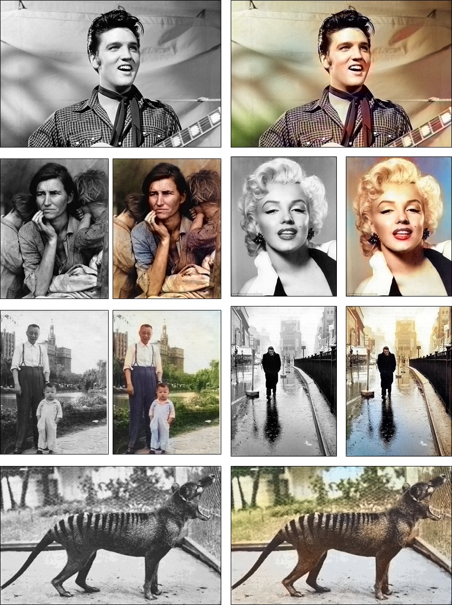

<body style=' font-family: "HelveticaNeue-Light", "Helvetica Neue Light", "Helvetica Neue", Helvetica, Arial, "Lucida Grande", sans-serif; font-weight:300; font-size:16px;'>
<table style='border: 0px; text-align: center;'>

<div style="width:850px">Examples from top to bottom, left to right are photos of Elvis Presley, by Dorothea Lange of <i>Migrant Mother</i>, Marilyn Monroe, an amateur family photo, by Henri Cartier-Bresson, and by Dr. David Fleay of <i>Benjamin</i>, the last captive Thylacine which went extinct in 1936. This is Figure 17 of our <a href="http://arxiv.org/pdf/1603.08511.pdf">full paper</a>.<br><br>

<!-- <tr><td>Rank</td><td><b>Input</b></td><td><b>Ours</b></td><td><b>Ground truth color</b></td> -->

<tr><td style='padding-bottom: 5px'>1</td><td style='padding-bottom: 5px'></tr><tr>

</body>
